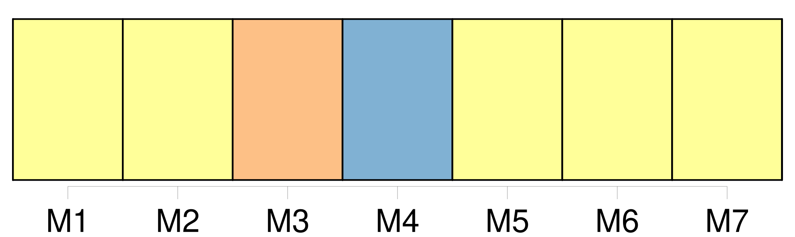
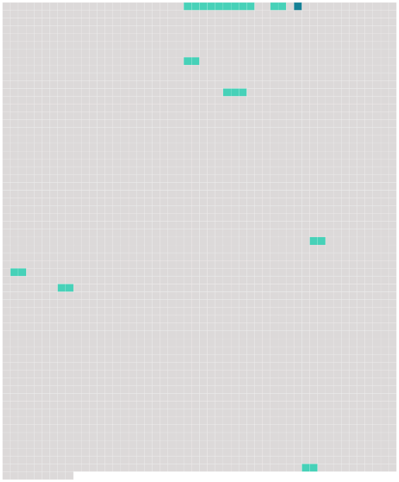

Longueur nb maillons : 9 mentions |
 |
Comme le lecteur doit être las de cette promenade à travers la solitude, la misère et l'abandon, menons -le à [la seule pièce un peu vivante du château désert] , à [la cuisine] , [dont] la cheminée envoyait au ciel ce léger nuage blanchâtre mentionné dans la description extérieure du castel. [6 phrases]
Ce chat tout seul, dans [cette cuisine] , semblait faire la soupe pour lui -même, et c'était sans doute lui qui avait disposé sur la table de chêne une assiette à bouquets verts et rouges, un gobelet d'étain, fourbi sans doute avec ses griffes tant il était rayé, et un pot de grès sur les flancs duquel se dessinaient grossièrement, en traits bleus, les armoiries du porche, de la clef de voûte et des portraits. [3 phrases]
Enfin un pas se fit entendre, pas lourd et pesant, celui d'une personne âgée ; une petite toux préalable résonna, le loquet de la porte grinça, et un bonhomme, moitié paysan, moitié domestique, fit son entrée dans [la cuisine.] [19 phrases] « Le jeune maître tarde bien à venir aujourd'hui, murmura Pierre, en voyant à travers les vitres enfumées et jaunes de l'unique fenêtre qui éclairât [la cuisine] diminuer et s'éteindre la dernière barre lumineuse du couchant au bord d'un ciel rayé de nuages lourds et gros de pluie. [3 phrases] Le battant s'ouvrit ; Pierre se leva, ôta respectueusement son béret, et le nouveau venu fit son apparition dans [la salle] , précédé du vieux chien dont nous avons déjà parlé, et qui essayait une gambade et retombait lourdement, appesanti par l'âge. [3 phrases] Le baron de Sigognac, car c'était bien le seigneur de ce castel démantelé qui venait d'entrer dans [la cuisine] , était un jeune homme de vingt-cinq ou vingt-six ans, quoique au premier abord on lui en eût attribué peut-être davantage, tant il paraissait grave et sérieux. [27 phrases] Pendant ce temps la nuit s'était faite, et de grandes ombres s'entassaient dans les recoins de [la cuisine] , comme des chauves-souris qui s'accrochent aux angles des murailles par les doigts de leurs ailes membraneuses. |
 |
Il est possible de télécharger la ressource sur la page Ortolang |
Si vous avez des questions ou vous voyez des erreurs, merci d'envoyer un mail à silvia.federzoni89@gmail.com |